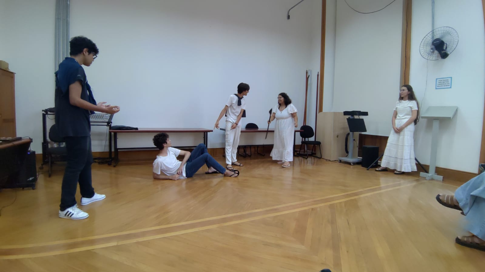

About
On this blog, I'll introduce you to the musical that some Cotuca' students performed on this Tuesday (April 1st) in the Salão Nobre, where other students could come and see it.
The musical is an interdisciplinary project for the second year of high school that integrates the subjects English and Physical Education. The teenagers are divided into groups and choose a song that they want to present.
In this edition, the group I'll talk about chose the music "Little Wolf" from the musical "Epic", which references Greek mythology.
Epic

In mythology, there are some epics, a literary genre characterized by narrating great deeds. In Greek, the Odyssey is one of the main epics, attributed to the Greek poet Homer. Tells the Odysseus (or Ulisses)'s journey, back to home (Ithaca), where his wife Penelope and his son Telemachus wait for him, after the Trojan War, facing gods and monsters.
Knowing this, Jorge Rivera-Herrans created, initially as a thesis, "Epic", a musical adaption of the Odyssey.The project began in 2019 and gained popularity in 2021 on TikTok. The first part, "The Troy Saga", was ' released in 2022, followed by "The Cyclops Saga (2023) and "The Ocean Saga (2023)". Only in August 2024, was released "The Wisdom Saga". In this last saga, Telemachus, now 20 years old, fights to protect his mother from suitors. Athena intervenes and, as looking for answers about Odysseus, discover that he is stuck with Calipso. To libert him, Athena challenges Zeus and need to convince five Olympian gods, culminating in the confrontation between she and Zeus.
Little Wolf
In this project, we chose, within the context of "Epic", the song "Little Wolf", which is part of "The Wisdom Saga", where, specifically, Telemachus, referring to a small wolf, faces the suitor Antinous to defend his mother's honor, but ends up being beaten. Athena, goddess of wisdom, in disguise, intervenes and saves him. After the fight, Telemachus asks why she helped him, and Athena reflects on her past with Odysseus, showing regret.
The reference used for the choreography wasthis animation
Lyrics available by clicking here.
Characters
This musical references the following figures and is played by the following actors:
| Athena | Telemachus |
|---|---|
 |
 |
| Clara Alves dos Santos | Júlio Pacheco Stein |
| Goddess of wisdom and guide Telemachus. | Son of Odysseus and Penelope. |
| Antinous | Battle spectators |
 |
- |
| Eduardo Artigiani Lima Tribst | Lorrayne Argenton dos Santos |
| Suitors of Telemachus' mother, confronting him. | Audience inside the play, reacting to the confrontation scenes and encouraging the fight. |
The illustrations were taken from here.
Production
Song Choice
The group was free to decide which song to perform and, after a few suggestions, Clara suggested "Little Wolf" and everyone agreed. The connection with Greek mythology caught our attention, in addition to the fact that this story was portrayed in such a modern way.
Rehearsal and challenges
The teachers set aside a few weeks of rehearsal during the classes, allowing the group to practice their performance and choreography. At first, there were challenges with how to put it into practice realistically without getting hurt. In addition, adjusting the timing of the music and the movement on stage took a lot of effort, and no one was confident. However, in the end, with a lot of preparation, the group gained confidence and improved their performance.
Costume

The costumes were thought to reflect the epic atmosphere of the musical, with light white clothes, open shoes, gold or silver accessories and capes. The pieces were improvised with clothes that the students already had, such as white pants, shirts and skirts, as well as sandals. The tiara, an accessory that one of the members already had, was a detail that made the look easier. Unfortunately, the cape was a difficult item to find, requiring more effort and adaptation to ensure that all the characters had costumes that were consistent with the musical's proposal.
Behind the Scenes
Between the rehearsals and the presentation, several funny situations happened. While interviewing them, I made some discoveries:
Mariana (Writer):
- Clara, what would you say was the funniest moment in the production?
Clara (Athena):
- One of the funniest moments was when Júlio, when Athena entered unexpectedly, made an exaggeratedly shocked face, making everyone laugh.
Mariana (Writer):
- However, Julio doesn't agree with this. What do you say, Julio?
Júlio (Telemachus):
- I would say it was really funny when I punched Eduardo (Antinous) frozen and he fell to the ground, it was hard to keep a straight face during that moment.
Mariana (Writer):
- What did you think of the musical experience?
Clara (Athena):
- It was very tiring and even a little stressful at times, but it's really cool to see the results and really like what you did.
Júlio (Telemachus):
- Overall, I didn't think it was that great. In the end, it might be kind of fun, but besides having to present it to a lot of people, many classes are used for this, which means that we don't end up getting as much pedagogical benefit as we would from normal classes. So the negative points end up outweighing the positive ones in my opinion.
Lorrayne (Battle spectators):
- As much as the results are fun to watch, I think there are other more productive and efficient ways to learn English. The time it takes to prepare and the actual impact of the work is not worth the effort.
Mariana (Writer):
- For you, what was the hardest part of all this?
Eduardo (Antinous):
- Probably adapt the fight scenes.
Júlio (Telemachus):
- Apart from presenting, I think it was planning the choreography and remembering what to do.
Clara (Athena):
- The hardest part was putting together the choreography, for sure, especially the fights.
Lorrayne (Battle spectators):
- The nervousness of the presentation.
In the end, everyone had their own experience with the musical. Thank you for sharing your insight!
